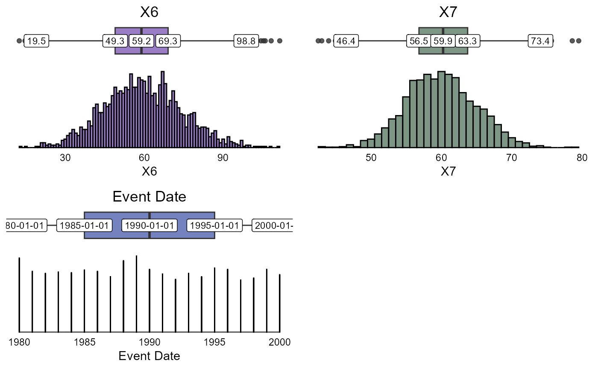

Graphical overview of an entire dataset
summarisR.RdGraphical overview of an entire dataset
Usage
summarisR(
data,
vars,
group,
type = NULL,
layout = "horizontal",
exclude = NULL,
bins = 1,
cols = cancR_palette,
headings = list(),
labels = F,
vjust = -0.5,
text.color = "White",
label.size = 3,
alpha = 0.8
)Arguments
- data
dataset
- vars
vector of variables to be presented
- group
Optional grouping variable
- type
shortcut to present all numeric or categorical variables ("numeric" or "categorical")
- layout
whether the bar plots should be "horizontal" (side-by-side) or "vertical" (stacked)
- exclude
regex of variables that should not be presented
- bins
number of bins for histograms
- cols
Color palette, defaults to cancR_palette
- headings
list specifying new variabel labels for layout
- vjust
vertical adjustment of the counts (pct) labels
- text.color
label colors
- label.size
label size
Value
Returns bar charts or density plots depending on format. Numerical variables with less than 5 unique values are considered as factors.
Examples
df <- analysis_df %>%
mutate(event_date = sample(c(seq(as.Date("1980-01-01"), as.Date("2000-01-01"), by = "years"), NA), size = n(), replace = TRUE))
summarisR(df, vars = c(X6, X7, event_date))
#> Warning: Removed 83 rows containing non-finite outside the scale range
#> (`stat_boxplot()`).
#> Warning: Removed 83 rows containing non-finite outside the scale range
#> (`stat_boxplot()`).
#> Warning: Removed 83 rows containing non-finite outside the scale range
#> (`stat_boxplot()`).
#> Warning: Removed 83 rows containing non-finite outside the scale range
#> (`stat_boxplot()`).
#> Warning: Removed 83 rows containing non-finite outside the scale range
#> (`stat_boxplot()`).
#> Warning: Removed 83 rows containing non-finite outside the scale range
#> (`stat_boxplot()`).
#> Warning: Removed 83 rows containing non-finite outside the scale range (`stat_bin()`).

summarisR(data=df,vars=c(X6, X7, X1, X3), group = X2)
#> Scale for fill is already present.
#> Adding another scale for fill, which will replace the existing scale.
#> Scale for fill is already present.
#> Adding another scale for fill, which will replace the existing scale.
summarisR(df, exclude = "time|event|t_", group = X2)
#> Scale for fill is already present.
#> Adding another scale for fill, which will replace the existing scale.
#> Scale for fill is already present.
#> Adding another scale for fill, which will replace the existing scale.
#> Scale for fill is already present.
#> Adding another scale for fill, which will replace the existing scale.
#> Scale for fill is already present.
#> Adding another scale for fill, which will replace the existing scale.
#> Scale for fill is already present.
#> Adding another scale for fill, which will replace the existing scale.
#> Scale for fill is already present.
#> Adding another scale for fill, which will replace the existing scale.
#> Scale for fill is already present.
#> Adding another scale for fill, which will replace the existing scale.
#> Scale for fill is already present.
#> Adding another scale for fill, which will replace the existing scale.
#> Scale for fill is already present.
#> Adding another scale for fill, which will replace the existing scale.
summarisR(df, c(X3,X1), group=X2, layout = "vertical")
 summarisR(df, c(X3,X1), group=X2, layout = "horizontal", label.size = 3)
#> Scale for fill is already present.
#> Adding another scale for fill, which will replace the existing scale.
#> Scale for fill is already present.
#> Adding another scale for fill, which will replace the existing scale.
summarisR(df, c(X3,X1), group=X2, layout = "horizontal", label.size = 3)
#> Scale for fill is already present.
#> Adding another scale for fill, which will replace the existing scale.
#> Scale for fill is already present.
#> Adding another scale for fill, which will replace the existing scale.